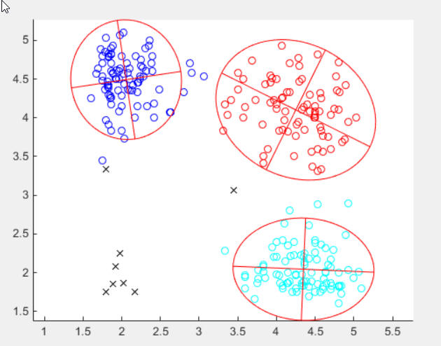

| Flexible Statistics Data Analysis Toolbox™ | |
tkmeans computes trimmed k-means
[out] = tclust(Y,k,alpha)
[out] = tclust(Y,k,alpha,param1,val1,param2,val2,...)
tkmeans partitions the points in the n-by-v data matrix Y into k clusters. This partition minimizes the trimmed sum, over all clusters, of the within-cluster sums of point-to-cluster-centroid distances. Rows of Y correspond to points, columns correspond to variables. tkmeans returns inside structure out an n-by-1 vector idx containing the cluster indices of each point. By default, tkmeans uses (squared) Euclidean distances.
DETAILS. This iterative algorithm initializes k clusters randomly and performs "concentration steps" in order to improve the current cluster assignment. The number of maximum concentration steps to be performed is controlled by input parameter refsteps. For approximately obtaining the global optimum, the system is initialized nsamp times and concentration steps are performed until convergence or refsteps is reached. When processing more complex data sets higher values of nsamp and refsteps have to be specified (obviously implying extra computation time). However, if more then 10% of the iterations do not converge, a warning message is issued, indicating that nsamp has to be increased.
tkmeans requires the following input
Y |
Y matrix of size n-by-v. Rows of Y represent observations, and columns represent variables. Missing values (NaN's) and infinite values (Inf's) are allowed, since observations (rows) with missing or infinite values will automatically be excluded from the computations. |
k |
Scalar which specifies the number of groups |
Scalar (real) generally between 0 and 0.5 or an integer specifying the number of observations which have to be trimmed. If alpha=0 tclust reduces to traditional model based or mixture clustering (mclust): see Matlab function gmdistribution. More in detail, if 0< alpha <0.5 clustering is based on h=fix(n*(1-alpha)) observations. Else if alpha is an integer greater than 1 clustering is based on h=n-floor(alpha); |
[out] = tkmeans(Y, k, alpha) returns the following information
idx − n-by-1 vector containing assignment of each unit to each of the k groups. Cluster names are integer numbers from 1 to k. 0 indicates trimmed observations.
muopt − k-by-v matrix containing cluster centroid locations. These are robust estimates of final centroids of the groups.
bs − k-by-1 vector containing the units forming initial subset associated with muopt.
[out] = tkmeans(Y,k,alpha,param1,val1,param2,val2,...) specifies one or more of the name/value pairs described in the following table.
| Parameter | Value |
|---|---|
| 'nsamp' | Number of subsamples which will be extracted to find the partition. If nsamp=0 all subsets will be extracted. They will be (n choose k). Remark: if the number of all possible subset is <300 the default is to extract all subsets, otherwise just 300 |
| 'refsteps' | Scalar defining number of refining iterations in each subsample (default = 15). |
| 'reftol' | Scalar. Default value of tolerance for the refining steps. The default value is 1e-14; |
| 'weights' | a dummy scalar, specifying whether cluster weights (1) shall be considered in the concentration and assignment steps. Remark: if weights=1 in the assignment step to the squared Euclidean distance of unit i to group j log n_j is substracted. The default is no cluster weights |
| 'plots' | Scalar. If plots = 1, a plot with the classification is shown on the screen. |
| 'msg' | Scalar which controls whether to display or not
messages on the screen. |
| 'nocheck' | Scalar. If nocheck is equal to 1 no
check is performed on |
| 'Ysave' | Scalar that is set to 1 to request that the input matrix Y is saved into the output structure out. Default is 0, i.e. no saving is done. |
Garcia-Escudero, L.A.; Gordaliza, A.; Matran, C. and Mayo-Iscar, A. (2008), "A
General Trimming Approach to Robust Cluster Analysis". Annals of Statistics,
Vol.36, 1324-1345. Technical Report available at
www.eio.uva.es/inves/grupos/representaciones/trTCLUST.pdf
tkmeans applied to geyser data with with option weights =0
% Trimmed k-means using geyser data
% 3 groups and trimming level of 3%
Y=load('geyser2.txt');
out=tkmeans(Y,3,0.03,'plots',1)

Compare the above solution with the one obtained with option weights =1
% Trimmed k-means using geyser data
% option weights =1
Y=load('geyser2.txt');
out=tkmeans(Y,3,0.03,'plots',1,'weights',1)

| |
tclustreg.html | triu2vec.html | |